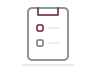

CADENCE / INTERFACE STUDY / 01
Room for the task at hand.
White surfaces. Wine accents. A quieter task list, built around the current learning exercise.
Design only. The screen is a static sample; its drawn controls do not change tasks.
任务
把眼前的事，一件件安排好。
任务标题
写下下一件事
提交课程报告
未完成
复习线性代数
已完成

暂无任务，添加一条吧
从上方的任务标题开始。
任务仅保留在本次会话，关闭后不会保存。
练习次数：0
01 / HIERARCHY
One clear action.
The heading, input and list share an edge. Wine identifies Add and the current page. Fine rules keep task content easy to scan.
02 / FEEDBACK
Say what happened.
Keep completion text, a strike-through and a check. Put Undo below the list. Explain that the current app only keeps tasks in memory.
03 / ARTWORK
Keep the family small.
Reuse the original mark and 1.75-unit icons. A compact note supports the empty state. Paper and sage stay in the editorial artwork.